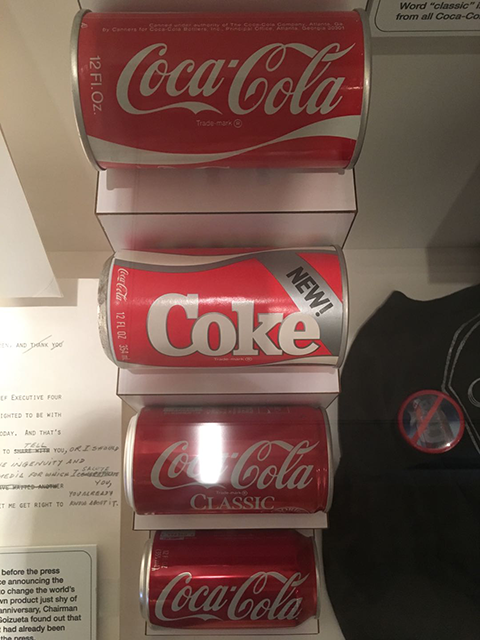

这里记录一些学生产品经理的观察和思考。一家之言，定有谬误之处，请诸君不吝指教。
产品经理负责对产品的改进，而改进多是从用户角度出发的，所以产品经理理论上就是要代表用户，唯用户马首是瞻。
纵有万般方法，有时产品经理也无法完整地理解用户。可口可乐公司在1985年4月23日在美国市场升级了原有配方，生产出“新可乐”。新可乐在口味盲测中完全超越了经典可乐。 他们信心满满地用新配方取代了经典配方，然而遭遇了市场上的负面评价和抵制。仅仅79天后，可口可乐公司便宣布退回到原有配方。

图中，上数第1罐为原可乐，第2罐即为“新可乐”。第3罐为退回原配方后的“经典可乐”，此时“新可乐”仍未停产，第4罐为2002年“新可乐”停产后的可乐。
从产品的角度出发，新可乐的口味比经典版更受人喜欢；新可乐的字体设计取代了古老的可口可乐飘带……但是产品却忽略了重要的一点，即是可口可乐的体验可能不仅是在“口感”上。
可乐的体验可能包括：口感（气泡，甜度，酸度，温度）观感（颜色，气泡的声音）功能（解渴，补充糖分，提神）等等很多方面，但口感并不是唯一重要的因素。 在这个事件中，新可乐取代老可乐遭到抵制的原因可能是，可口可乐的体验还包括“文化”和“传承”，甚至“追思”。新可乐直接取代，还带来了负面情绪“失去感”。 可口可乐随着二战走遍了全世界，和“美国文化”牢牢地绑定在了一起。 他打开的这罐饮料，和他小时候，和他祖父小时候喝到的是同一种味道。既然已经够好喝了，为什么要为了一点点口味的改进，而丢失了这种一脉相承的感觉呢？ 这可能是绝大多数人拒绝新可乐的原因。 从2016年后，可口可乐公司甚至在美国包装上注明“ORIGINAL TASTE（原始口味）”，在中国区包装也着重宣传“畅爽怡神，始于1886”，目的可能也是在传达“传统”“不变”等信息吧。
世界上根本不存在全知全能的人。即使使用了再多的方法，做了再多的调查，数据再华丽，还是可能会有关注不到的细节，存在出错的概率。 所以做分析时，在向深挖掘的同时，也不要忘记向广挖掘。一门心思向深挖掘，可能会一叶障目，不见泰山。
资深的产品经理，一定是产品的用户，并极有可能是产品的深度用户。在调校产品时，有没有可能习惯了以深度用户的角度来审视？ 我从小学乐器，听流行歌曲的曲谱很容易。 我发现现在在听歌时，会不经意间记旋律记谱，而忽视歌词。我自认为这就是“当局者迷”的例子。当你成为行内人士时，可能反而会忽略一些普通人可能会更关注的细节。 很多科班演员会很不理解吧，为什么抖音快手火了那么多草根演员，他们眼神飘忽对白尴尬演技浮夸，总之就是不专业。 但是他们火起来，肯定是满足了观众一些其他方面的需求。在满足了这些之后，甚至演技都可以忽略不考量了。这时候回头看，专业演技在表演中真的是最重要的吗？